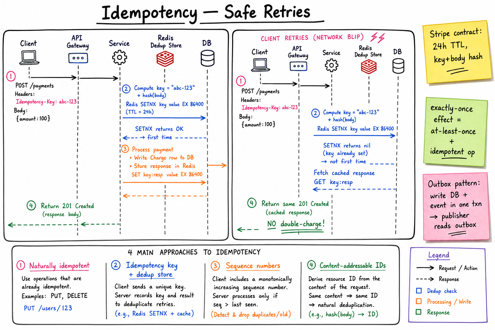

Idempotency // Concept
At-least-once delivery is unavoidable in distributed systems. The only safe response is idempotent operations: same effect whether the call runs once, twice, or twenty times. Idempotency = exactly-once delivery's only realistic substitute.

First request flow: Idempotency-Key header → Redis SETNX with 24h TTL → process → cache response. Retry: SETNX returns nil → return cached response, no double-charge.
01 — What Problem It Solves
NETWORK is unreliable. Failures are AMBIGUOUS: Client sends POST /payments Server processes, charges $100 Server response lost in transit (network blip) Client times out, RETRIES Server processes again, charges $100 AGAIN. → user charged twice. Lawsuit. THE TRUTH: Distributed systems CAN'T do exactly-once delivery (Two Generals Problem). Best you can do: exactly-once EFFECT = at-least-once delivery + idempotent op. IDEMPOTENT: f(f(x)) = f(x). Applying twice has the same result as once.
If your design ever assumes "the network will deliver my call exactly once," it's wrong. Build for "I will be called 2x; be safe." Idempotency is non-negotiable for payments, inventory, jobs, anything with side effects.
01a — Core Vocabulary
| Term | Meaning |
|---|---|
| Idempotent operation | Running it N times = running it once. Same DB state, same response. |
| Idempotency key | Client-supplied unique token that identifies a logical operation. Stripe: Idempotency-Key: abc-123 header. |
| Exactly-once delivery | Impossible in async networks (Two Generals). |
| Exactly-once effect | At-least-once delivery + idempotent consumer. Achievable. |
| Dedup store | Where you remember "I already saw this key." Redis, DB unique index, Bloom filter. |
| SETNX / NX | "Set if not exists" — the atomic primitive for dedup. |
| Outbox pattern | Write the event to the same DB txn that wrote the data; publisher tails the table. |
| Content-addressable ID | ID derived from request content (hash). Same input → same ID. |
| Conditional request | If-Match: "etag" — "only apply if version still matches." CAS at HTTP level. |
| Replay window / TTL | How long the dedup store remembers. Typical: 24h. |
02 — 4 Approaches
| Approach | How | Use When |
|---|---|---|
| 1. Naturally idempotent | Use HTTP verbs that are idempotent by spec: PUT (whole-resource overwrite), DELETE, GET. PUT /users/123 {name=foo} — running it twice = same state. | Whenever the operation maps to "replace resource at known ID." |
| 2. Idempotency key + dedup store | Client sends Idempotency-Key header. Server stores key → response. Same key → return cached response. | POST creates (payments, orders); core pattern. |
| 3. Sequence numbers | Client increments a counter per session. Server records last-seen; rejects duplicates / out-of-order. | TCP-like sessions, ordered message channels. |
| 4. Content-addressable IDs | Resource ID = hash(content). Two clients submitting the same payload land on the same row. | S3 object names, Git, dedup storage. |
03 — Diagram
Main diagram above shows the request lifecycle: first POST creates Redis SETNX entry, processes, stores response; retry hits SETNX-already-exists path, returns cached response. No second charge.
04 — Idempotency Key Design
WHO GENERATES THE KEY?
- CLIENT (recommended). It's the only side that knows
"I'm retrying" vs "this is a brand new operation."
- Server-generated keys defeat the purpose because the
retry would never carry the same key.
WHAT MAKES A GOOD KEY?
- Globally unique per logical operation.
- UUID v4 from the client per request submit.
- For idempotent batch jobs: deterministic key e.g.
sha256("daily-rollup-2024-01-15-region-us-east").
KEY + BODY HASH:
Stripe stores hash(idempotency_key + request_body) so that if a
client sends the same key with DIFFERENT body, they get an error
("idempotency_key_reused"). Prevents subtle bugs.
WHAT THE KEY IS *NOT*:
- Not a transaction ID. It's metadata about a request, not data about a charge.
- Not signed. Server-side dedup; clients can't forge other clients' keys
if scoped per user (key namespace).
05 — Dedup Store Choices
| Store | Primitive | Pros / Cons |
|---|---|---|
| Redis (SETNX + TTL) | SET key value NX EX 86400 | Sub-ms, easy. Not durable (replicate or accept rare loss). Common choice. |
| DB unique index | INSERT INTO idempotency (key, response_body) ... ON CONFLICT DO NOTHING RETURNING ... | Durable, transactional. Slower than Redis. Use for high-value (payments). |
| DynamoDB conditional write | PutItem ConditionExpression: attribute_not_exists(key) | Cloud-native. TTL built in. Used by many AWS-native services. |
| Bloom filter | Probabilistic membership | Tiny memory; false-positive risk → wrongly reject a new request. Don't use for correctness, only for "skip" optimization. |
What to store under the key
- Status: IN_PROGRESS, COMPLETED, FAILED.
- Result/response body: so retries return identical bytes (e.g. the created Payment ID).
- Request body hash: detect key reuse with different body.
- Created timestamp: for TTL + auditing.
TTL strategy
Stripe-style: 24h. Long enough for client retries (network blips, queue replays); short enough not to blow up the store. For event consumers (Kafka), TTL = retention period. For human-driven retries (web forms), 1h is fine.
06 — Exactly-Once Effect
EXACTLY-ONCE DELIVERY is impossible across an async network
(Two Generals Problem: any ack can be lost).
EXACTLY-ONCE EFFECT is the achievable equivalent:
AT-LEAST-ONCE delivery (the broker / network keeps retrying)
+ IDEMPOTENT processing (consumer dedupes / commutes)
= exactly one observable outcome.
CONSUMER-SIDE RECIPE:
on receive(msg):
if redis.SETNX("dedup:" + msg.id, 1, EX=86400):
process(msg) # first time
ack(msg)
else:
ack(msg) # already processed; just ack
PROCESS() ITSELF MUST BE IDEMPOTENT:
- UPSERT not INSERT (or INSERT ... ON CONFLICT).
- CAS UPDATE WHERE version = N for mutations.
- Atomic primitives (counter via INCRBY is naturally idempotent only
if you also dedupe the message; otherwise INCR is exactly the opposite).
07 — Outbox & Kafka Transactional
Outbox pattern (DB-driven)
BEGIN
-- the business write
UPDATE payment SET status = 'PAID' WHERE id = 42;
-- the event in the same txn
INSERT INTO outbox (id, topic, payload)
VALUES (gen_uuid(), 'PaymentPaid', '{"id":42}');
COMMIT
-- separate publisher loop
SELECT * FROM outbox WHERE published_at IS NULL LIMIT 100;
for each: kafka.send(topic, payload, key=id); -- id = idempotency for consumer
UPDATE outbox SET published_at = now() WHERE id = $1;
The id field in the outbox row is the dedup key for downstream consumers. Multiple publish attempts on the same outbox row produce the same Kafka message with the same id; consumers dedupe.
Kafka transactional producer (Kafka-only)
kafka.beginTransaction()
kafka.send("PaymentPaid", payload)
kafka.sendOffsetsToTransaction(consumed_offsets)
kafka.commitTransaction()
Inside Kafka, this is "exactly-once" semantics: produce + commit-offset
atomic. Consumer reads in isolation.level=read_committed mode.
DOES NOT extend to external sinks (DB writes) unless you put the
external work behind another idempotency key.
See Kafka deep dive.
08 — The Stripe Contract
HEADERS:
Idempotency-Key: bd9b0d2c-... (client UUID, free choice)
SERVER BEHAVIOR:
- First time: process, store response, return 201.
- Same key + same body: return the SAME response (cached). Status,
body, headers all identical.
- Same key + DIFFERENT body: return 400 idempotency_key_reused.
- Concurrent same key: one request lands first; second waits/409.
- 24h TTL: after that, the key is forgotten and may be reused as a new op.
- Only POST/PATCH/DELETE accept it (GET/PUT already idempotent).
WHY IT WORKS:
- Client retries safely.
- Network blips don't double-charge.
- Server is stateless about retry intent (just stores key → response).
- The Stripe SDK auto-generates a per-request UUID, retries 3x with
exponential backoff — all transparent to the dev.
Copy this contract. It's been battle-tested across billions of payments. The exact same pattern works for any "create resource with side-effects" API: bookings, jobs, messages, orders.
09 — Pitfalls
- Idempotency only on the API layer. The downstream work (DB write, external call) is still racy. Each step must be idempotent.
- Storing only "key → success/fail" without response body. Retry returns a stale 200 with no body; client can't reconcile.
- Key reuse across requests. If the client reuses a UUID for two different operations, they collide. Mitigate with body hash check.
- TTL too short. Retries from a transient outage 25h later sneak past. Pick TTL based on max retry horizon.
- TTL too long. Dedup store grows unbounded; legitimate same-key reuse is rejected.
- Race window between check and write. Naive "GET then INSERT" race. Always use atomic SETNX / unique index / ConditionExpression.
- Concurrent retries: two requests with same key arrive in parallel. First does SETNX; second sees IN_PROGRESS; must either block-and-poll, return 409 "in progress," or return cached response when ready.
- Non-deterministic responses. The cached response should be a fixed snapshot — don't include "real-time" fields like server timestamp inside it (or accept those will be the cached values).
- External side effects (email, SMS). "Send email" isn't idempotent — the user gets the same email twice. Use a sent-emails dedup table keyed by idempotency key.
N-2 — Where It Shows Up
- Payment system — Idempotency-Key header on POST /payments; mandatory.
- Job scheduler — two-layer idempotency: idempotent submit (don't queue twice) + idempotent execute (don't run twice).
- Notification system — dedup by (user_id, notification_id) to avoid duplicate pings.
- Ad click aggregator — dedup by click_id; clicks land at-least-once but count exactly once.
- Message queue — the canonical "at-least-once consumer needs idempotency" story.
- Transactions & Sagas — every saga step must be idempotent.
- Message queue patterns — at-least-once + dedup = exactly-once effect.
- Concurrency control — CAS is itself a flavor of idempotency.
- Kafka — transactional producer + idempotent producer.
N-1 — Common Interview Probes
- "How do you avoid double-charging on payment retries?" → Idempotency-Key + dedup store.
- "How does Stripe's Idempotency-Key work?" → client UUID, 24h TTL, body-hash binding.
- "Exactly-once is impossible — what do you do?" → at-least-once + idempotent processing.
- "Where do you store the dedup key?" → Redis SETNX, DB unique index, DynamoDB conditional.
- "What TTL?" → 24h Stripe-style, scoped to retry horizon.
- "Outbox pattern, why?" → atomic DB + event publish.
- "What's the race between check and write?" → always atomic; SETNX or UNIQUE INDEX.
N — Interview Q&A
Why can't we do exactly-once delivery?
Two Generals Problem: in an async network, any single ack can be lost. The sender can't tell if the receiver got the message and the ack was lost, vs the message itself was lost. So the sender either gives up too early (loss) or retries (duplicate). No protocol resolves this. The workaround is exactly-once effect: at-least-once delivery + idempotent processing.
Who generates the idempotency key — client or server?
The client. Only the client knows "this is a retry of an earlier request" vs "this is a new operation." If the server generated keys, retries would each get a new one and dedup is impossible. Stripe SDKs auto-generate UUIDs per request submit.
What goes in the dedup store besides the key?
Status (IN_PROGRESS, COMPLETED, FAILED), full response body (so retries return identical bytes), request body hash (detect key reuse with different body), created timestamp (for TTL). Don't just store "exists" — you'd lose the response.
What TTL on the dedup key?
Stripe-style 24h covers most retry scenarios. Longer (7d) for batch workflows where retries can come from a paused queue. Shorter (1h) for user-driven web actions. Match to your retry horizon: if a client could retry up to T hours later, TTL ≥ T + safety margin.
How does the outbox pattern guarantee idempotent publishing?
The DB row is the source of truth: "I committed; the event MUST be published." Publisher reads outbox row, sends to Kafka with the row's UUID as message key. Crashes mid-send → on restart, the row is still there, retries. Consumer dedupes by message key. So the publish is at-least-once, but the consumer sees the effect exactly once.
What if two retries arrive concurrently with the same key?
Use atomic SETNX: only the first wins. The second sees IN_PROGRESS → either (a) returns 409 Conflict to let the client poll, or (b) waits for the first to complete then returns the cached response. Stripe returns a special error so the client knows to retry slightly later.
Same key, different body — what happens?
Stripe returns 400 with idempotency_key_in_use / idempotency_key_reused. The server stores the request-body hash alongside the key; mismatch indicates the client is misusing the key. Catches subtle client bugs (reusing a UUID across forms).
How do you make "send email" idempotent?
External side effects are not naturally idempotent. Mitigation: track "I've sent (notification_id, user_id)" in a dedup table; before calling SES/Mailgun, INSERT-IF-NOT-EXISTS on (notification_id, user_id). If already sent, skip. Provider-level dedup helps too (SES supports source-message-id).
Why is SETNX better than GET-then-SET?
GET-then-SET is not atomic: two requests can both see "key not exists," both set, both process → double-effect. SETNX (SET NX in Redis, INSERT with UNIQUE INDEX in SQL, ConditionExpression in DynamoDB) is one round-trip and atomic; only one wins.
What's the relationship between idempotency and CAS?
CAS = idempotency at the data layer: UPDATE x SET v = new WHERE v = old succeeds once even if retried because the second retry's WHERE no longer matches. The HTTP equivalent is conditional requests with If-Match: etag. Both achieve "second call is a no-op."
How does Kafka's idempotent producer differ from the consumer-side dedup?
Kafka's idempotent producer dedupes on the broker side: producer attaches a sequence number per partition; broker drops duplicates within a session. Solves producer-side retries. Doesn't solve consumer-side retries — consumers still need their own dedup based on message ID. Both layers together give exactly-once effect end-to-end within Kafka.
SDE-2 vs SDE-3 differentiator?
| SDE-2 | SDE-3 |
|---|---|
| "Add an idempotency key, store in Redis" | Designs the full contract (Stripe-style); picks SETNX vs DB unique vs DynamoDB conditional; stores response body + body hash; handles concurrent retries with IN_PROGRESS state; integrates with outbox pattern; reasons about TTL and key reuse; recognizes that downstream work also needs to be idempotent; handles non-idempotent side effects (email) with per-action dedup tables |